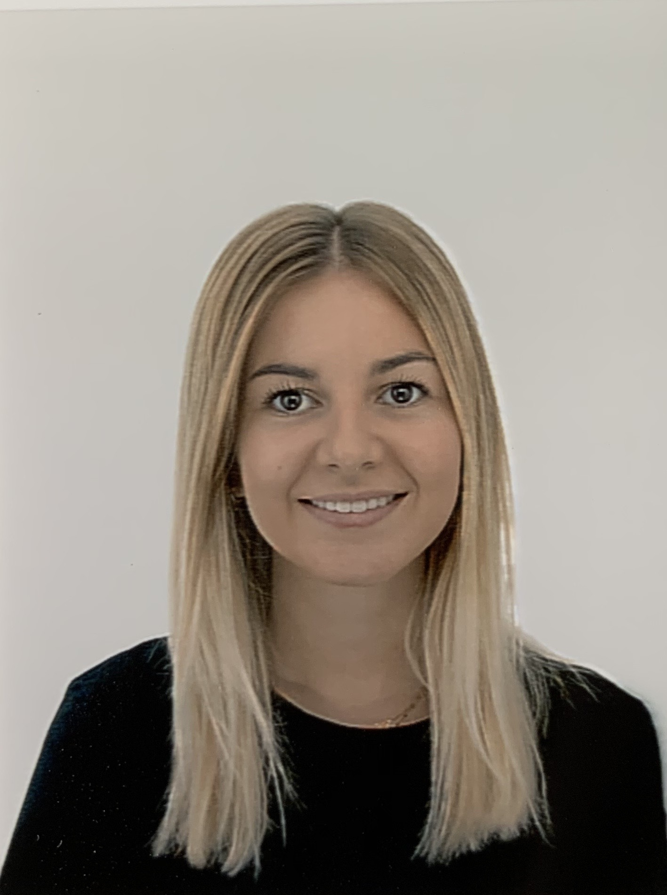

A propos de moi
Actuellement étudiante en Master Spécialisé
Marketing Digital & Data à Kedge Business
School en alternance au sein du groupe
de cosmétique IEVA.
Compétences
- Pack Office
- CMS
- CRM
- Suite Adobe
Expérience associative
Fashion Society Marseille / Août
2020 - Janvier 2022
Membre de
l'association du master au
sein du pôle communication
: création et entretien de la page
Instagram
MasterModeFeg
Centres d'intérêt
Découverte de nouvelles
architecture et de nouvelles cultures.
Univers du digital
Monde de la mode, du luxe
➡️ EXPÉRIENCES PROFESSIONNELLES 👩🏻💻
- Alternante Assistance e-commerce et web-markering - IEVA GROUP
- Gestion du site e-commerce de L'Atelier du Sourcil via Shopify
- Choix des animations hebdomadaires
- Création des Newsletters sur Mailchimp
- Stage Assistante Web Marketing et Produit - ARMENAK CHAUSSEUR
- Gestion de la relation client
- Participation à la création des newsletters
- Export et import de données
- Mise en place d'une stratégie digitale de réactivation de clients inactifs
- Stage Assistante Directeur Artistique - LXH
- Création de newsletters et de contenus visuels
- Création et mise en ligne de filtres Instagram
- Confection de BAT pour les prochaines collections
- Création de looks pour Shooting photo
➡️ DIPLÔMES ET FORMATIONS 👩🏻🎓
- Mastère spécialisé Marketing Digital & Data, depuis Septembre 2021,
Kedge Business School Paris - Master des Métiers de la Mode et du Textile, obtenu en Septembre 2021 -
Mention Bien, Aix-Marseille Université - Licence Economie et Gestion, Parcours Economie et Management des Firmes et des Organisations, obtenue en juin 2019,
Aix-Marseille Université